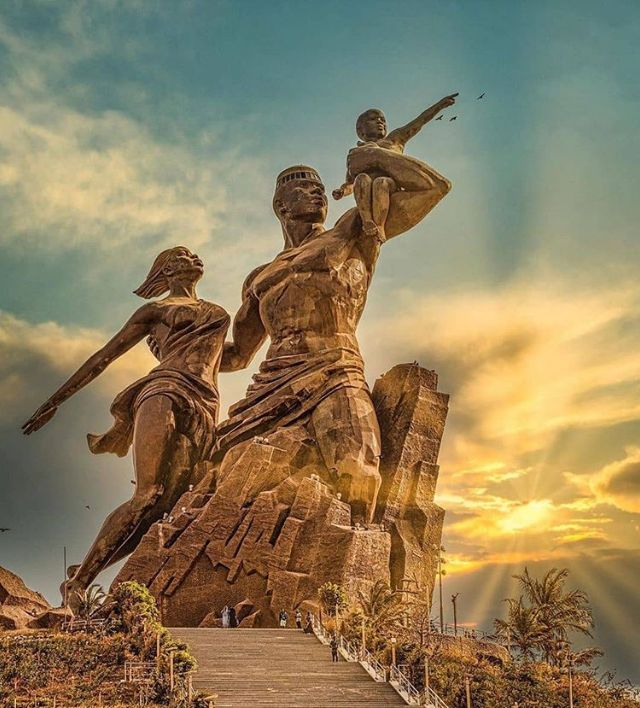
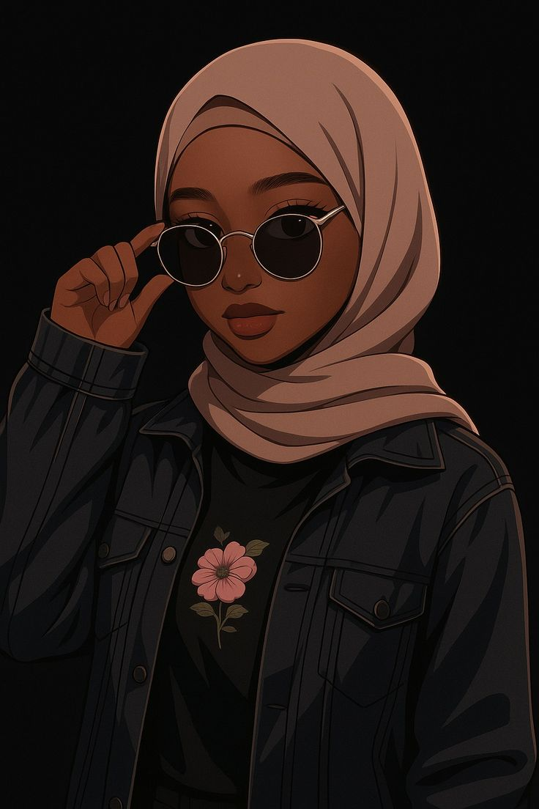
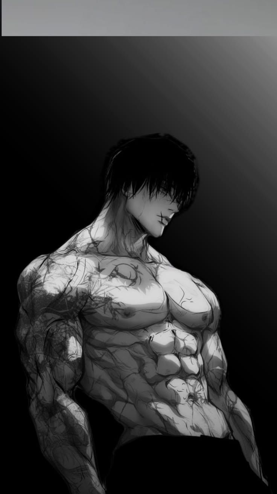

BANKAI a été créé le 10 janvier 2006 à Dakar, Sénégal, sur la Place de la Nation. Ce qui n'était au départ qu'un simple projet scolaire est devenu une véritable mission : aider les jeunes à se lancer dans le sport sans avoir peur.
Nos fondateurs, Marem Seye et Pape Omar Barry, deux passionnés de sport, ont voulu créer un espace où chacun peut trouver des informations claires, des programmes adaptés et des conseils bienveillants pour débuter ou progresser en musculation.
Aujourd'hui, BANKAI accompagne des milliers de jeunes sénégalais et d'ailleurs dans leur parcours sportif, avec toujours la même philosophie : le sport est pour tout le monde, sans exception.

"Aider les jeunes à se lancer dans le sport sans avoir peur"
Chez BANKAI, nous croyons que la musculation n'est pas réservée à une élite. Elle est accessible à tous : femmes, hommes, débutants, confirmés, jeunes et moins jeunes. Notre rôle est de vous donner les clés pour commencer en confiance, avec des explications claires et des programmes adaptés.

Co-fondatrice
Passionnée de sport depuis l'enfance, Marem a toujours voulu casser les stéréotypes sur la musculation féminine. Elle est la garante de l'approche bienveillante et accessible de BANKAI, avec une attention particulière pour l'accompagnement des femmes qui souhaitent se lancer dans le sport.

Co-fondateur
Heritier de l'amour du sport qu'avait son père, Pape omar s'est lancé dans la musculation afin de découvrir d'autre aspect du sport,découvrant ainsi la beauté de la musculation. C'est cette expérience personnelle qui l'a poussé à créer BANKAI avec Marem. Il est l'architecte des programmes d'entraînement, alliant rigueur technique et adaptabilité.
Place de la Nation
Dakar, Sénégal
Email : bankai@bankai.sn
Tél : +221 766232106 / +221 775745888
Année de création
Jeunes accompagnés
Programmes disponibles
Vidéos éducatives
"Nous croyons que chaque jeune mérite de découvrir les bienfaits du sport sans peur du jugement. BANKAI est né de cette conviction et continue de grandir grâce à vous. Merci de faire partie de cette aventure."
— Marem Seye & Pape Omar Barry